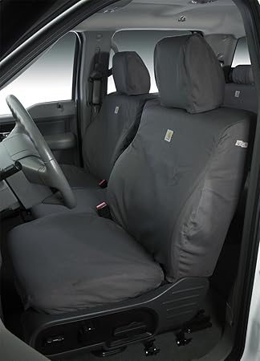

#2 — Diver Down Neoprene Seat Cover Set Fits Jeep JL 4-Door 2018-2025 Custom Fit — Fan favorite #3 — FREESOO Customized Seat Covers Full Set for Jeep Wrangler JL 4 Door 2018-20 — Consistently rated
#3 — FREESOO Customized Seat Covers Full Set for Jeep Wrangler JL 4 Door 2018-20 — Consistently ratedMay 2026
Buying jluseatcovers online can feel risky. Mixed reviews, confusing specs, and every brand claiming to be "the best." Here's what actually matters.

#2 — Diver Down Neoprene Seat Cover Set Fits Jeep JL 4-Door 2018-2025 Custom Fit — Fan favorite#3 — FREESOO Customized Seat Covers Full Set for Jeep Wrangler JL 4 Door 2018-20 — Consistently rated2026 has brought quality jluseatcovers options at every price point. See our complete guide for current recommendations.